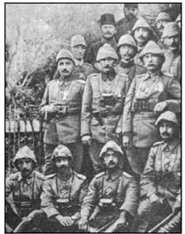

XIII
Hiçbiri diğerini geriletememiş olan Avustralyalılar ve Türkler, siper kazmaya başladılar. Avustralyalılar ilerlemeyi başarıncaya değin, o zamana kadar ele geçirdiklerini tutmakta karalıydılar. Türkler ise düşmanı durdurmakta en az onlar kadar kararlıydılar.
Bundan sonraki birkaç hafta siper savaşının yol açtığı büyük sıkıntılar ve gerginliklerle dolu geçti. Siper kazma; düşman mevzilerine ulaşmak için “sıçan yolları” ve tüneller açma; tehlike karşısında, gergin bir durumda kalmasına yol açan koşullar; düşmanın kafayı patlatan sonu gelmez kurşun sesleri; patlayan şarapnellerin sinirleri bozan patırtıları; karanlıkta iki cephe arasında kalan sahipsiz mıntıkada dikenli telleri onarmanın getirdiği büyük korku; saldırmak için gruplar halinde bir tünelde beklemenin ıstırabı; düşmanın süngüler ve el bombalarıyla yapacağı ani dehşet verici saldırının daha da ıstırap verici bekleyişi; dar siperlerde ve yeraltında yabanıl, soğuk çelik ve ölüm; uygarlıktan uzak, acı çeken bedenler ve etrafa saçılan şarapnellerle gelen ölüm...
Ve bütün bunlarla birlikte kavurucu bir yaz sıcağı geldi. Su son derece kıttı. Güneş; kayalık, kıraç tepeleri yakıyor, hepsini sıcaktan kıpkırmızı kesilmiş bir toz yığınına dönüştürüyordu. Hatlar arasında ölü bedenler çürüyordu. Kocaman, mavi sinekler havayı doldurmuştu. On binlerce sinek ağır ve sakınımlı davranışlarla, bu yiyeceğe sokulmuştu. Ve sineklerin ardından dizanteri, barsak iltihabı hastalıkları ile birlikte milyonlarca bit geldi. Her iki tarafın da dayanma gücü neredeyse tükenme noktasına gelmişti.
Bütün bunlar olurken, Mustafa Kemal bir an bile bırakmamıştı. Kendini güçlü ve mutlu hissediyordu. Tam yerini bulmuştu, savaşıyordu! Çok az uyuyordu, uyku ihtiyacı yokmuş gibi görünüyordu. Adamlarını acımasızca, hatta çılgınca ileri sürüyordu; bununla birlikte, son derece soğukkanlıydı. Kararlarını matematiksel bir kesinlikle alıyor, emirlerini kesin surette veriyordu.
Sağındaki 9. Tümen’in kumandanı Alman General Herr Kannengeiser, onun yeteneği karşısında şaşkına dönmüştü. Mustafa Kemal’i “berrak fikirli ve etkin” olarak tanımlıyordu. “Her şeye kendi başına karar veriyor. Ne istediğini gerçekten çok iyi biliyor.” diyordu.
Sürekli olarak ateş hattındaki diğer subaylar ve askerlerle konuşuyor, böylece ilk elden bilgiye sahip oluyordu. Araziyi incelemek için sık sık siperlerden çıkıyor, hatta daha da tehlikeli olanı yapıp, öncü kolun da ötesine geçerek, tehlike bölgesine gidiyordu. Mayıs’ta yapılan bir ateşkeste ölülerin toplanması sırasında, bir çavuş kıyafetiyle toplayıcılar arasına karışmış, böylece Avustralyalıların siperlerini bizzat gözetleme imkânını elde etmişti. Hiç ara vermeksizin küçük saldırılar düzenlemeye devam ediyordu; hücum anında adamları harekete geçirmek üzere orada oluyordu; kimi zaman saldırıda bizzat en önde yer alıyordu. Kendisini bir an bırakmadığı gibi, birliklerinin moralinin gevşemesine de izin vermiyordu.
Tekrar tekrar ateş altına girmekten geri durmuyordu. Kendini hiç sakınmıyor, adamlarının karşı karşıya kaldığı tehlikeleri onlarla paylaşıyor; ama çevresindeki tüm adamlar öldüğü halde, ona hiçbir şey olmuyordu. Adamlarına örnek olacak şekilde, üzerinde ince ince çalışılmış bir atılganlıkla hareket ediyordu.
Bir keresinde, yeni kazılmış bir siperin dışında oturuyordu. Bir ingiliz bataryası sipere ateş açtı. Toplar menzili buldukça şarapneller gitgide daha yakınlara düşmeye başladı, vurulması matematiksel olarak kesindi. Kurmayları sipere girmesi için yalvarmaya başladılar.
“Hayır,” dedi; “Saklanmak adamlarım için kötü bir örnek olacaktır.” ilgisiz ve soğukkanlı bir tavırla kurmaylarıyla konuşurken, bir sigara yakıp gayet sakin onu içti. Bu arada aşağıda siperin güvenliği altında duran adamları, büyülenmiş gibi onu seyrediyorlardı. Düşman topları bir başka hedefe yöneldiler. Patlayan şarapnellerin tozlarına bulanmış da olsa, Mustafa Kemal’e yine bir şey olmamıştı.
Bir başka olayda da Gelibolu’ya dönerken bir ingiliz uçağı, otomobilini baştan aşağı taradı. Bombalar arabanın önünde ve arkasındaki yolda patladı; bir tanesi de ön cama çarpıp şoförü öldürdü, fakat Mustafa Kemal’e hiçbir şey olmadı.
Zaman zaman eline bir tüfek alıp siperden dışarıya uzanıyor, Avustralya siperlerindeki belirli bir hedefe dikkatli ve telaşsız birkaç atış yapıyordu. Açık alanlarda adamlarına cesaret vermek için yavaş yavaş hareket ediyor, kısa menzilde bile, düşman avcıları onu vurmayı başaramıyorlardı.
Kesinlikle ve tümüyle hiçbir kurşunun ona rastlamayacağına inanmıştı. Bu inanç, ona olağanüstü bir korkusuzluk aşılamaktaydı.
Haziran’da düşman hatlarında zayıf bir nokta keşfetti. Eğer burayı aşmayı başarırsa, tüm Avustralya siperlerini tahrip edebilir ve onları tepeden geri çekilmeye zorlayabilirdi. 28 Haziran günü için bir saldırı planladı. Saldırıya, cepheye yeni gelen yaman bir birlik olan 18. Alay öncülük edecek ve tümenin geri kalanı onu destekleyecekti.
26 Haziran günü, artık Harbiye Nazırı ve Başkumandan yardımcısı olan Enver, Gelibolu cephesine bir ziyaret yaptı. Önerilen bu hücumu işitir işitmez derhal karşı çıktı. Bu saldırıyı akılsızca planlanmış bir hücum olarak değerlendiriyordu. Mustafa Kemal’in yüksek otoritenin onayını almış olması gerektiğini söyledi; çünkü o, adamlarını anlamsız hücumlarda harcamaya her zaman hazırdı. Mustafa Kemal, iki makineli tüfeğin ele geçirildiğini rapor etmişti; ama kendisi bu rapora inanmamıştı; bu yüzden önce makineli tüfekleri ve tutsakları görmek istedi.
Mustafa Kemal, büyük bir öfkeye kapıldı. Yine Enver! Ucuz Politika aracılığıyla iktidarı kapan, işe yaramaz küçük züppe Enver! Her şeye burnunu sokan ve her şeyi istismar eden Enver! Hemen istifasını gönderdi.
Liman von Sanders onu istifasını geri almaya ikna etti. Alman general en iyi tümen kumandanını kaybetmek istemiyordu. Mustafa Kemal’i beğeniyordu. Mustafa Kemal gibi, o da profesyonel bir askerdi ve Enver’in o pırıltılı yetersizliğine karşı derin bir tiksinti duyuyordu. Enver’in müdahalesinden o da hiç hoşlanmamıştı.

Gelibolu Seferi’nde Mustafa Kemal
Enver vetosunu geri aldı. Hücum başlatıldı. Sonuç tam bir başarısızlıktı. 18. Alay tümüyle imha olundu. Hazırlıklar tamamlanmamıştı ve kurmay heyetinin çalışmaları son derece kötü yapılmıştı.
Mustafa Kemal, suçu Enver’in müdahalesinde buluyordu. Enver, 19. Tümen’i ziyaret edip, askerlerini cesaretlerinden dolayı kutladı; ancak, başarısızlıktan Mustafa Kemal’i sorumlu tuttuğunu da açıkça belirtti.
Mustafa Kemal tekrar istifa etti. Liman von Sanders de tekrar istifasını geri aldırmaya çalıştıysa da bu kez kararından döndüremedi. Kurmay başkanı Kazım’dan Mustafa Kemal’i ikna etmesini istedi. Kazım, telefonla Mustafa Kemal’i aradı.
Kazım nazik bir dille “Durumu nasıl görüyorsunuz? Bu durumda ne yapmak gerek? Ne düşünüyorsunuz?” diye sordu.
“Size bundan önce durum hakkında ne düşündüğümü ve ne yapılması gerektiğini defalarca söylemiştim, fakat dinletemedim.” diye sert bir şekilde cevapladı, Mustafa Kemal bu soruyu. “Şimdi geriye yapılacak bir tek şey kalıyor.”
Bu cevaba kızan Kazım; “Peki, nedir o?” diye sordu.
“Elinizdeki tüm birlikleri benim kumandama verin.”
“Hepsi bu kadar mı?” diye alaycı bir karşılık verdi, Kazım; “Fakat hepsi size çok gelmez mi?”
“Az gelir!” cevabını veren Mustafa Kemal, telefonu kapattı.
Sonunda Liman von Sanders -Enver de İstanbul’a dönmüş olduğundan-Mustafa Kemal’i kalmaya ikna edebildi.